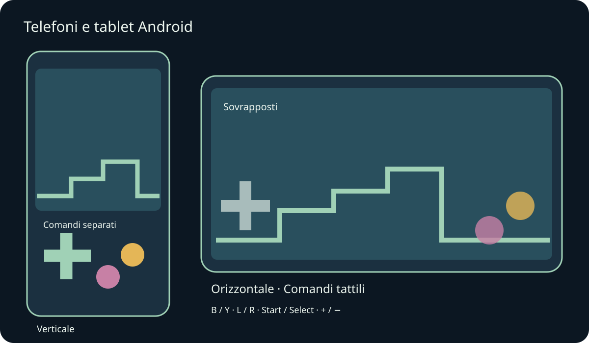
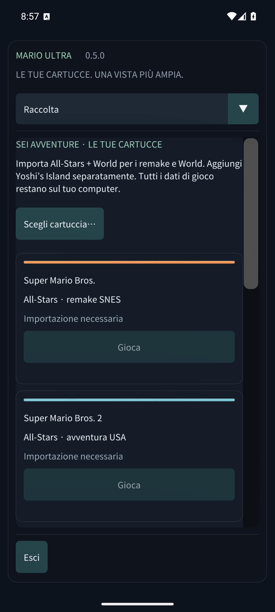

Mario Compilation Ultra 0.5.0
Telefoni e tablet Android

Installa l’APK Android per telefono/tablet e apri Mario Compilation Ultra. L’APK pubblico GitHub richiede le tue cartucce; l’edizione personale con ROM include già i sei giochi. L’APK Quest è un’app separata per il visore. Richiede Android 8 o successivo e OpenGL ES 3; include ARM64, ARMv7 e x86_64.
Rotazione e ridimensionamento conservano la partita. I margini proteggono ritagli e navigazione di sistema.
Usa più dita per muoverti, correre e saltare insieme. Un gamepad collegato nasconde i comandi tattili automatici. Indietro Android apre il menu.
Le lettere corrispondono al SNES: B salta e Y corre nella maggior parte dei Mario. L, R, Start e Select restano disponibili. Vista alterna cinque modalità; meno/più regola lo zoom. Tieni premuto riavvolgi per tornare indietro. Opzioni mette subito in pausa. Scorri i menu con un dito e scegli la sezione nell’elenco superiore sugli schermi stretti.
- Orientamento mobile
- Comandi tattili
- Disposizione tattile
- Dimensione pulsanti tattili
- Opacità dei comandi tattili
- Comandi per mancini
- Vibrazione al tocco
- Mantieni lo schermo acceso durante il gioco
Stati, riavvolgimento e salvataggi usano l’archivio privato dell’app. In background vengono scritti i salvataggi della cartuccia e, se attivo, lo stato di ripresa 0. Gli aggiornamenti con la stessa firma conservano i progressi. Disinstallare o cancellare i dati elimina cartucce e salvataggi locali. Gli stati sono in Salvataggi e audio.
I test su emulatori di telefono e tablet sono distinti dall’hardware fisico. Prestazioni, gamepad, ritagli e finestre possono variare per dispositivo. macOS resta sperimentale e non è stato testato su un Mac fisico. Il rapporto indica la copertura esatta.
